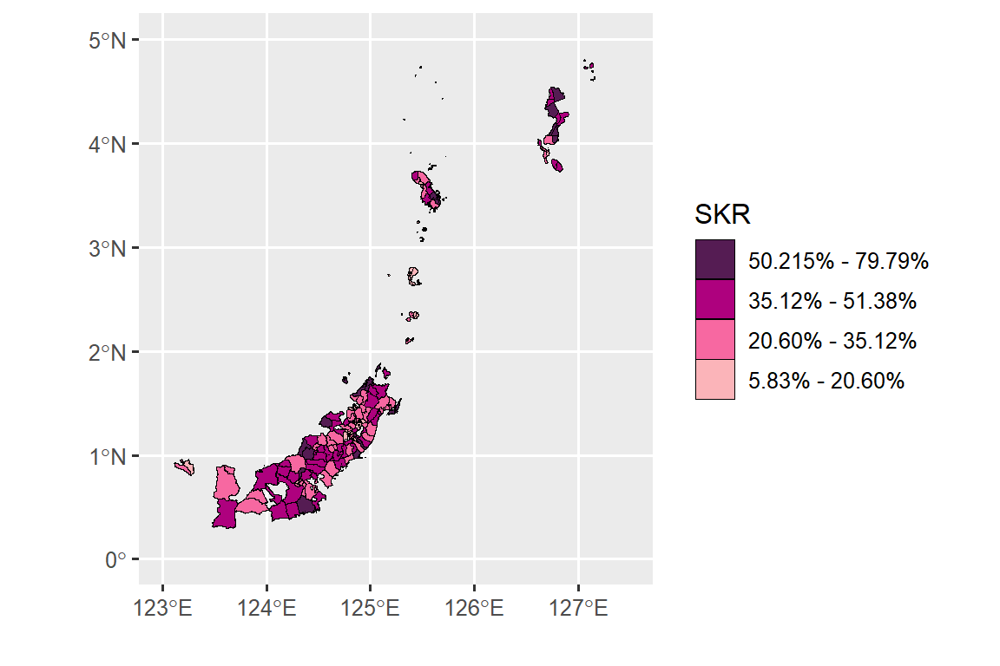

library(car) # Untuk menghitung nilai VIF
library(classInt) # Untuk membuat selang nilai
library(ggplot2) # Untuk visualisasi data
library(lmtest) # Untuk pengujian asumsi
library(spdep) # Untuk dependensi spasial
library(gstat) # Untuk membuat variogram
library(sp) # Untuk membentuk Mixed GWR model
library(GWmodel) # Untuk membentuk Mixed GWR modelb. Regresi Terboboti Geografis Campuran
Deskripsi
Regresi terboboti geografis campuran (RTGC) memiliki parameter yang bersifat lokal dan global (Fotheringham et al., 2005). Prosedur pendugaan parameter pada model RTGC menggabungkan metode parametrik (parameter global) dan nonparametrik (parameter lokal), sehingga model ini juga dikenal sebagai RTG semiparametrik (Nakaya T, 2005). Model RTGC diformulasikan sebagai berikut:
\[ y_i = \sum_{j=1}^{k} \alpha_j x_{ij} + \sum_{l=k+1}^{p} \beta_l(u_i,v_i) x_{il} + \epsilon_i \tag{1}\]
dengan \(i = 1, \ldots, n; j = 1, 2, \ldots, k; l = 0, 1, 2, \ldots, p\),
\[\begin{align*} (u_i, v_i) &: \text{koordinat (longitud, latitud) titik lokasi ke-i,} \\ \beta_l(u_i, v_i) &: \text{parameter beragam geografis (lokal) disetiap lokasi-i,} \\ \alpha_j &: \text{parameter bernilai konstan (global),} \\ y_i &: \text{peubah respon lokasi ke-i,} \\ x_{ij} &: \text{peubah penjelas parameter global ke-j pada lokasi ke-i,} \\ x_{il} &: \text{peubah penjelas parameter lokal ke-l pada lokasi ke-i,} \\ p &: \text{banyaknya peubah lokal,} \\ k &: \text{banyaknya peubah global,} \\ \epsilon_i &: \text{pengaruh acak ke-i yang diasumsikan identik, saling bebas, dan menyebar }N(0, \sigma^2). \end{align*}\]
Pendugaan parameter lokal pada RTGC menggunakan metode yang sama dengan pendugaan pada RTG, yaitu menggunakan kuadrat terkecil terboboti. Model RTGC dalam bentuk matriks dinyatakan sebagai:
\[ y = X_g a + m + \epsilon \tag{2}\]
dengan elemen vektor \(m = \sum_{l=k+1}^{p} \beta_l(u_i,v_i) x_{il}\). Penduga parameter lokal adalah:
\[ \hat{m} = S_l (y - X_g a) \tag{3}\]
dengan matriks-Hat adalah
\[ S_l = \begin{bmatrix} (X_{l1}' W(u_i, v_i) X_{l1})^{-1} X_{l1}' W(u_i, v_i) \\ (X_{l2}' W(u_i, v_i) X_{l2})^{-1} X_{l2}' W(u_i, v_i) \\ \vdots \\ (X_{ln}' W(u_i, v_i) X_{ln})^{-1} X_{ln}' W(u_i, v_i) \end{bmatrix} \tag{4}\]
dan \(X_{li}\) adalah vektor prediktor yang bersifat lokal pada lokasi-\(i\), serta \(W(u_i, v_i) = \text{diag}[w_1(u_i, v_i), w_2(u_i, v_i), \ldots, w_n(u_i, v_i)]\) adalah matriks pembobot spasial lokasi-\(i\) yang nilai elemen-elemen diagonalnya ditentukan oleh kedekatan lokasi-i dengan lokasi lainnya. Matriks \(W(u_i, v_i)\) ditentukan dengan menggunakan fungsi kernel, seperti yang dibahas pada RTG.
Untuk menentukan parameter global, Persamaan 3 disubstitusikan ke Persamaan 2 sehingga diperoleh:
\[ \hat{a} = (X_g' WX_g)^{-1} X_g' Wy \tag{5}\]
Sehingga prediksi untuk \(hat{y}\) adalah:
\[ \hat{y} = X_g (X_g' WX_g)^{-1} X_g' Wy + S_l y \tag{6}\]
Pengujian hipotesis pada RTGC menggunakan uji-t dengan hipotesis yang diuji sebagai berikut:
\[\begin{align*} H_0: & \ \beta_j(u_i, v_i) = 0 \quad \text{(peubah penjelas tidak berpengaruh nyata)} \\ H_1: & \ \beta_j(u_i, v_i) \neq 0 \quad \text{(peubah penjelas berpengaruh nyata)} \end{align*}\]
Statistik uji untuk menguji hipotesis tersebut adalah:
\[ t_{\text{hit}} = \frac{\hat{\beta}_j(u_i, v_i)}{S_{\hat{\beta}_j(u_i, v_i)}} \quad \text{untuk } i=1,2,\ldots,n; \ j=0,1,2,\ldots,p \tag{7}\]
Dengan galat baku \(\hat{\beta}_j(u_i, v_i)\) adalah \(S_{\hat{\beta}_j(u_i, v_i)} = \sqrt{(I-S_l)(I-S_l)'\hat{\sigma}^2}\), dan penduga ragam adalah \(\hat{\sigma}^2 = \frac{\sum_{i=1}^n (y_i - \hat{y}_i)^2}{n-p}\). \(H_0\) ditolak jika nilai \(t_{\text{hit}} > t_{(\alpha/2;n-p)}\) (Fotheringham et al., 2005).
Data
Ilustrasi untuk model RTGC merujuk hasil penelitian Pongoh (2015) dan Mar’ah et al. (2017). Penentuan peubah penjelas yang bersifat global dan lokal ada dua pendekatan, yaitu dengan menggunakan model liner koregionalisasi (MLK) dan selang kepercayaan. MLK agak rumit tetapi hasilnya lebih detil (Mar’ah et al., 2017), sedangkan metode selang kepercayaan dari koefisien RTG sangat sederhana Pongoh (2015).
Data dalam penelitian ini bersumber dari Basis Data Terpadu keluarga miskin untuk Program Perlindungan Sosial Juli 2012 pada 159 kecamatan di Provinsi Sulawesi Utara, data diambil dari website TNP2K (Tim Nasional Percepatan Penanggulangan Kemiskinan). Peubah respon (\(Y\)) yang digunakan yaitu persentase status kesejahteraan rendah (%) dan prediktor yang digunakan selengkapnya tertera di Tabel 1. Data dan peta ilustrasi RTGC tersedia pada tautan https://ipb.link/gwr-mixed.
| Kode | Peubah |
|---|---|
| \(X_1\) | Persentase kepala rumah tangga perempuan per kecamatan |
| \(X_2\) | Persentase anak tidak sekolah |
| \(X_3\) | Persentase penderita cacat |
| \(X_4\) | Persentase penderita penyakit kronis |
| \(X_5\) | Persentase individu tidak bekerja usia di atas 15 tahun |
| \(X_6\) | Persentase rumah tangga memiliki bangunan milik sendiri |
| \(X_7\) | Persentase rumah tangga menggunakan sumber air minum air terlindung |
| \(X_8\) | Persentase rumah tangga menggunakan listrik/PLN |
| \(X_9\) | Persentase rumah tangga menggunakan kompor gas/listrik |
| \(X_10\) | Persentase rumah tangga menggunakan jamban sendiri |
| \(X_{11}\) | Persentase rumah tangga menggunakan SPAL |
Metode Analisis
Tahapan analisis data adalah sebagai berikut:
-
Eksplorasi Data:
- Eksplorasi data dengan membentuk peta tematik dari persentase status kesejahteraan rendah (SKR).
- Memeriksa multikolinearitas pada prediktor menggunakan Variance Inflation Factor (VIF).
-
Pengujian Efek Spasial:
- Uji dependensi menggunakan Lagrange Multiplier (LM).
- Uji keragaman spasial menggunakan uji Breusch-Pagan (BP).
-
Pemodelan Regresi Terboboti Geografis (RTG):
- Menentukan lebar jendela (bandwidth) optimum menggunakan fungsi kernel bisquare dengan lebar jendela yang bersifat tetap.
- Menduga penduga parameter RTG.
- Penentuan peubah penjelas yang bersifat global dan lokal menggunakan Maximum Likelihood Kernel (MLK).
- Menduga semivariogram dan semivariogram silang.
- Menghitung proporsi keragaman spasial tiap prediktor.
-
Pemodelan Regresi Terboboti Geografis Campuran (RTGC):
- Melakukan pendugaan parameter RTGC.
- Menghitung \(AIC_C\).
- Membandingkan model RTG dan RTGC berdasarkan nilai \(AIC_C\).
Tahapan Analisis Data dengan R
Package
Berikut daftar package yang digunakan untuk menduga RTGC:
Input Data
Input data menggunakan sintaks berikut:
#Set Lokasi File
#Input Data
SKR <- read.csv('data/data_gwr_mixed.csv')
#
#Daerah Singkil tidak diikutkan sementara karena tidak ada dalam peta
SKR <- SKR[SKR$daerah != "SINGKIL",]
#
#Input peta SHP
IDN <- read_sf("data/shp/BATAS KECAMATAN DESEMBER 2019 DUKCAPIL.shp")
#
#Menggabungkan Data ke file SHP
sf_use_s2(FALSE)
#> Spherical geometry (s2) switched off
gabung <- merge(IDN, SKR, by.x = "KECAMATAN",
by.y = "daerah",
all.x = FALSE,
all.y = FALSE)
longlat = st_coordinates(st_centroid(gabung))
#> Warning: st_centroid assumes attributes are constant over
#> geometries
#> Warning in st_centroid.sfc(st_geometry(x), of_largest_polygon =
#> of_largest_polygon): st_centroid does not give correct centroids
#> for longitude/latitude data
head(gabung)
#> Simple feature collection with 6 features and 15 fields
#> Geometry type: MULTIPOLYGON
#> Dimension: XY
#> Bounding box: xmin: 124 ymin: 0.888 xmax: 125 ymax: 1.56
#> Geodetic CRS: WGS 84
#> KECAMATAN latitude longitude y x1 x2 x3 x4 x5
#> 1 AERTEMBAGA 1.505 125 25.8 2.05 26.9 0.32 0.88 51.2
#> 2 AIRMADIDI 1.427 125 23.9 2.52 17.6 0.23 1.47 44.4
#> 3 AMURANG 1.132 125 31.6 3.13 16.1 0.61 2.32 47.3
#> 4 AMURANG BARAT 1.141 125 31.2 2.22 16.7 0.57 1.23 46.8
#> 5 AMURANG TIMUR 1.171 125 33.5 1.50 15.4 0.29 0.63 50.2
#> 6 BELANG 0.972 125 31.5 3.14 18.9 0.31 1.42 48.4
#> x6 x7 x8 x9 x10 x11 geometry
#> 1 14.8 14.0 21.6 0.40 13.22 6.54 MULTIPOLYGON (((125 1.44, 1...
#> 2 14.7 11.5 22.1 0.44 15.69 9.02 MULTIPOLYGON (((125 1.46, 1...
#> 3 20.7 23.4 30.2 0.57 18.25 22.95 MULTIPOLYGON (((125 1.19, 1...
#> 4 22.4 23.1 30.3 0.48 15.96 18.01 MULTIPOLYGON (((125 1.21, 1...
#> 5 27.3 30.9 32.4 0.40 22.67 23.21 MULTIPOLYGON (((125 1.23, 1...
#> 6 26.1 18.9 30.7 0.16 6.19 13.58 MULTIPOLYGON (((125 0.888, ...Eksplorasi Data
Pemeriksaan multikolinearitas antar peubah prediktor menggunakan sintaks sebagai berikut:
Berdasarkan output di atas, nilai VIF dari semua prediktor cukup kecil, sehingga disimpulkan tidak terdapat multikolinearitas.
Untuk membuat peta sebaran SKR terlebih dulu dilakukan pembentukan selang kelas menggunakan metode kmeans. Sintaks untuk membuat selang kelas SKR sebagai berikut:
#selang kelas kmeans
classIntervals(gabung$y, n = 4, style = 'kmeans')
#> style: kmeans
#> one of 497,640 possible partitions of this variable into 4 classes
#> [5.83,20.6) [20.6,35.1) [35.1,50.2) [50.2,79.8]
#> 28 52 49 22Berdasarkan selang nilai yang terbentuk dibuat peta tematik SKR (Gambar 1) dengan sintaks sebagai berikut:
#Peta SKR
cc <- c('#fbb4b9', '#f768a1', '#ae017e', '#551c53')
plot.skr <- ggplot(data = gabung) +
geom_sf(aes(fill = cut(
y, breaks = c(5.82, 20.60,
35.12, 51.38, 79.79)
)), lwd = 0.1,
col = 'black') +
scale_fill_manual(
"SKR",
values = cc,
labels = c(
"5.83% - 20.60%",
"20.60% - 35.12%",
"35.12% - 51.38%",
"50.215% - 79.79%"
),
guide = guide_legend(reverse = T)
) +
xlab("") + ylab("") + xlim(123, 127.5) + ylim(0, 5)
plot.skr

Uji Efek Spasial
a. Membentuk matriks pembobot spasial
Pada ilustrasi ini, matriks pembobot spasial yang digunakan yaitu matriks KNN dengan K = 2 menggunakan sintaks sebagai berikut:
#Matriks bobot 2-NN
k<-knearneigh(longlat, k=2, longlat = TRUE)
k1<-knn2nb(k)
#> Warning in knn2nb(k): neighbour object has 6 sub-graphs
klist<-nb2listw(k1)
summary(klist)
#> Characteristics of weights list object:
#> Neighbour list object:
#> Number of regions: 151
#> Number of nonzero links: 302
#> Percentage nonzero weights: 1.32
#> Average number of links: 2
#> 6 disjoint connected subgraphs
#> Non-symmetric neighbours list
#> Link number distribution:
#>
#> 2
#> 151
#> 151 least connected regions:
#> 1 2 3 4 5 6 7 8 9 10 11 12 13 14 15 16 17 18 19 20 21 22 23 24 25 26 27 28 29 30 31 32 33 34 35 36 37 38 39 40 41 42 43 44 45 46 47 48 49 50 51 52 53 54 55 56 57 58 59 60 61 62 63 64 65 66 67 68 69 70 71 72 73 74 75 76 77 78 79 80 81 82 83 84 85 86 87 88 89 90 91 92 93 94 95 96 97 98 99 100 101 102 103 104 105 106 107 108 109 110 111 112 113 114 115 116 117 118 119 120 121 122 123 124 125 126 127 128 129 130 131 132 133 134 135 136 137 138 139 140 141 142 143 144 145 146 147 148 149 150 151 with 2 links
#> 151 most connected regions:
#> 1 2 3 4 5 6 7 8 9 10 11 12 13 14 15 16 17 18 19 20 21 22 23 24 25 26 27 28 29 30 31 32 33 34 35 36 37 38 39 40 41 42 43 44 45 46 47 48 49 50 51 52 53 54 55 56 57 58 59 60 61 62 63 64 65 66 67 68 69 70 71 72 73 74 75 76 77 78 79 80 81 82 83 84 85 86 87 88 89 90 91 92 93 94 95 96 97 98 99 100 101 102 103 104 105 106 107 108 109 110 111 112 113 114 115 116 117 118 119 120 121 122 123 124 125 126 127 128 129 130 131 132 133 134 135 136 137 138 139 140 141 142 143 144 145 146 147 148 149 150 151 with 2 links
#>
#> Weights style: W
#> Weights constants summary:
#> n nn S0 S1 S2
#> W 151 22801 151 126 652b. Uji Lagrange Multiplier
Pengujian efek dependensi spasial dengan menggunakan uji Lagrange Multiplier dengan sintaks sebagai berikut:
# uji LM dan RLM
summary(lm.LMtests(model, klist, test = "all"))
#> Please update scripts to use lm.RStests in place of lm.LMtests
#> Rao's score (a.k.a Lagrange multiplier) diagnostics for
#> spatial dependence
#> data:
#> model: lm(formula = y ~ x1 + x2 + x3 + x4 + x5 + x6 + x7 +
#> x8 + x9 + x10 + x11, data = gabung)
#> test weights: listw
#>
#> statistic parameter p.value
#> RSerr 16.199 1 5.7e-05 ***
#> RSlag 2.952 1 0.08578 .
#> adjRSerr 13.746 1 0.00021 ***
#> adjRSlag 0.499 1 0.47984
#> SARMA 16.698 2 0.00024 ***
#> ---
#> Signif. codes: 0 '***' 0.001 '**' 0.01 '*' 0.05 '.' 0.1 ' ' 1Pada output uji LMerr dan RLMerr memiliki p-value < \(\alpha=0.05\), menunjukkan pada data terdapat dependensi spasial pada galat.
c. Uji Breusch-Pagan
Uji Breusch-Pagan digunakan untuk mengidentifikasi adanya keheterogenan spasial dengan sintaks sebagai berikut:
#Uji Breusch-Pagan
bptest(model)
#>
#> studentized Breusch-Pagan test
#>
#> data: model
#> BP = 37, df = 11, p-value = 1e-04Pada output uji Breusch-Pagan memiliki p-value < \(\alpha=0.05\), menunjukkan terdapat heterogenitas spasial.
Regresi Terboboti Geografis (RTG)
a. Menentukan lebar jendela
Pada ilustrasi ini digunakan kernel bisquare dengan sintaks sebagai berikut:
# Mengubah data menjadi class SpatialPointsDataFrame
SKR <- read.csv('data/data_gwr_mixed.csv')
rownames(SKR)<-SKR$daerah
coordinates(SKR)<-~longitude+latitude
#
#Menentukan nilai bandwidth
band <- bw.gwr(
y ~ x1 + x2 + x3 + x4 + x5 + x6 + x7 +
x8 + x9 + x10 + x11,
data = SKR,
approach = "CV",
kernel = "bisquare",
adaptive = F,
p = 2,
theta = 0,
longlat = T
)
#> Fixed bandwidth: 405 CV score: 1199
#> Fixed bandwidth: 250 CV score: 1183
#> Fixed bandwidth: 155 CV score: 24682
#> Fixed bandwidth: 310 CV score: 1124
#> Fixed bandwidth: 346 CV score: 1155
#> Fixed bandwidth: 287 CV score: 1106
#> Fixed bandwidth: 273 CV score: 1113
#> Fixed bandwidth: 296 CV score: 1111
#> Fixed bandwidth: 282 CV score: 1107
#> Fixed bandwidth: 290 CV score: 1107
#> Fixed bandwidth: 285 CV score: 1106
#> Fixed bandwidth: 284 CV score: 1106
#> Fixed bandwidth: 286 CV score: 1106
#> Fixed bandwidth: 285 CV score: 1106
#> Fixed bandwidth: 285 CV score: 1106
#> Fixed bandwidth: 285 CV score: 1106
#> Fixed bandwidth: 285 CV score: 1106
#> Fixed bandwidth: 285 CV score: 1106
#> Fixed bandwidth: 285 CV score: 1106Pada output terlihat nilai lebar jendela optimum sebesar 284.7643 dengan nilai CV minimum sebesar 1106.087.
b. Menduga parameter RTG
Pendugaan parameter RTG dengan menggunakan kernel bisquare dapat dilakukan dengan menggunakan sintaks berikut:
# Pendugaan parameter RTG dengan fixed bisquare
gwrmod <- gwr.basic(
y ~ x1 + x2 + x3 + x4 + x5 + x6 +
x7 + x8 + x9 + x10 + x11,
data = SKR,
bw = band,
kernel = "bisquare",
adaptive = F,
p = 2,
theta = 0,
longlat = T,
F123.test = F,
cv = T,
W.vect = NULL
)
gwrmod
#> ***********************************************************************
#> * Package GWmodel *
#> ***********************************************************************
#> Program starts at: 2024-11-14 14:46:16.409305
#> Call:
#> gwr.basic(formula = y ~ x1 + x2 + x3 + x4 + x5 + x6 + x7 + x8 +
#> x9 + x10 + x11, data = SKR, bw = band, kernel = "bisquare",
#> adaptive = F, p = 2, theta = 0, longlat = T, F123.test = F,
#> cv = T, W.vect = NULL)
#>
#> Dependent (y) variable: y
#> Independent variables: x1 x2 x3 x4 x5 x6 x7 x8 x9 x10 x11
#> Number of data points: 159
#> ***********************************************************************
#> * Results of Global Regression *
#> ***********************************************************************
#>
#> Call:
#> lm(formula = formula, data = data)
#>
#> Residuals:
#> Min 1Q Median 3Q Max
#> -6.645 -1.910 -0.304 1.635 10.340
#>
#> Coefficients:
#> Estimate Std. Error t value Pr(>|t|)
#> (Intercept) -5.2812 1.5183 -3.48 0.00066 ***
#> x1 0.8420 0.2753 3.06 0.00264 **
#> x2 -0.0681 0.0545 -1.25 0.21349
#> x3 5.4623 1.3248 4.12 6.2e-05 ***
#> x4 -0.0429 0.2348 -0.18 0.85539
#> x5 0.1577 0.0287 5.49 1.7e-07 ***
#> x6 0.6947 0.0344 20.17 < 2e-16 ***
#> x7 0.0411 0.0281 1.46 0.14623
#> x8 0.2761 0.0319 8.64 8.6e-15 ***
#> x9 0.3176 1.1573 0.27 0.78415
#> x10 0.1432 0.0430 3.33 0.00109 **
#> x11 -0.0559 0.0347 -1.61 0.10994
#>
#> ---Significance stars
#> Signif. codes: 0 '***' 0.001 '**' 0.01 '*' 0.05 '.' 0.1 ' ' 1
#> Residual standard error: 2.8 on 147 degrees of freedom
#> Multiple R-squared: 0.967
#> Adjusted R-squared: 0.965
#> F-statistic: 394 on 11 and 147 DF, p-value: <2e-16
#> ***Extra Diagnostic information
#> Residual sum of squares: 1153
#> Sigma(hat): 2.71
#> AIC: 792
#> AICc: 795
#> BIC: 739
#> ***********************************************************************
#> * Results of Geographically Weighted Regression *
#> ***********************************************************************
#>
#> *********************Model calibration information*********************
#> Kernel function: bisquare
#> Fixed bandwidth: 285
#> Regression points: the same locations as observations are used.
#> Distance metric: Great Circle distance metric is used.
#>
#> ****************Summary of GWR coefficient estimates:******************
#> Min. 1st Qu. Median 3rd Qu. Max.
#> Intercept -8.35419 -5.76962 -4.70407 -3.99029 -0.11
#> x1 0.07279 0.08781 0.23971 0.91937 1.37
#> x2 -0.16804 -0.00727 0.00801 0.01535 0.03
#> x3 -0.31994 4.90227 5.17278 6.14818 8.51
#> x4 -0.27295 -0.20332 -0.18330 -0.06512 0.43
#> x5 0.04112 0.13155 0.14934 0.15804 0.17
#> x6 0.48962 0.49567 0.51835 0.60398 0.97
#> x7 -0.00254 0.03146 0.08327 0.10957 0.11
#> x8 0.04378 0.27359 0.41388 0.44893 0.47
#> x9 -2.16001 -1.79062 -1.31923 2.12698 8.29
#> x10 0.06966 0.13879 0.15246 0.17079 0.24
#> x11 -0.10114 -0.09516 -0.08226 -0.03549 0.00
#> ************************Diagnostic information*************************
#> Number of data points: 159
#> Effective number of parameters (2trace(S) - trace(S'S)): 31
#> Effective degrees of freedom (n-2trace(S) + trace(S'S)): 128
#> AICc (GWR book, Fotheringham, et al. 2002, p. 61, eq 2.33): 754
#> AIC (GWR book, Fotheringham, et al. 2002,GWR p. 96, eq. 4.22): 712
#> BIC (GWR book, Fotheringham, et al. 2002,GWR p. 61, eq. 2.34): 664
#> Residual sum of squares: 691
#> R-square value: 0.98
#> Adjusted R-square value: 0.976
#>
#> ***********************************************************************
#> Program stops at: 2024-11-14 14:46:16.441599Berdasarkan output dapat dilihat RTG mempunyai nilai \(R^2\) yang lebih tinggi dan AIC yang lebih rendah dibandingkan model regresi linear.
Penentuan peubah global dan peubah lokal
a. Menduga semivariogram dan semivariogram silang
Untuk menduga semivariogram dan semivariogram silang, data lebih dulu di standarisasi. Selanjutnya, dibentuk objek geostatistik dari semua peubah yang digunakan. Pada ilustrasi ini model struktur tersarang yang digunakan yaitu model Nug(0) + Sph(54) + Gau(161) dengan sintaks sebagai berikut:
#Variogram dan semivariogram silang
SKR <- read.csv('data/data_gwr_mixed.csv')
# Standarisasi data
scaleSKR <- as.data.frame(scale(SKR[,4:15]))
coord <- SKR[,2:3]
#
#Mengubah koordinat ke bentuk longitunde-latitude
coord <- coord*111.32
colnames(coord)<-c("lat","long")
#
#Mengubah data menjadi class SpatialPointsDataFrame
SKR.sp <-cbind(scaleSKR,coord)
coordinates(SKR.sp)=~long+lat
#
#Membuat objek geostatistik dari setiap peubah
g = gstat(NULL, "y", y~1, SKR.sp)
g = gstat(g, "x1", x1~1, data=SKR.sp)
g = gstat(g, "x2", x2~1, data=SKR.sp)
g = gstat(g, "x3", x3~1, data=SKR.sp)
g = gstat(g, "x4", x4~1, data=SKR.sp)
g = gstat(g, "x5", x5~1, data=SKR.sp)
g = gstat(g, "x6", x6~1, data=SKR.sp)
g = gstat(g, "x7", x7~1, data=SKR.sp)
g = gstat(g, "x8", x8~1, data=SKR.sp)
g = gstat(g, "x9", x9~1, data=SKR.sp)
g = gstat(g, "x10", x10~1, data=SKR.sp)
g = gstat(g, "x11", x11~1, data=SKR.sp)
#
#Variogram, semivariogram, dan semivariogram silang
v = variogram(g, cutoff = 240, width = 25)
g = gstat(
g,
model = vgm(
psill = .75,
model = "Gau",
range =
161,
add.to = vgm(
psill = .35,
model = "Sph",
nugget =
0.35,
range = 54
)
),
fill.all = TRUE
)
g.fit = fit.lmc(v, g, fit.lmc = TRUE, correct.diagonal =
1.01)b. Menghitung proporsi keragaman spasial setiap peubah
Proporsi keragaman spasial ditentukan berdasarkan selang kepercayannya. Rataan proporsi keragaman spasial diperoleh dari rasio antara sill dari nugget terhadap total sill dari tiap peubah. Batas bawah diperoleh dari rasio antara sill dari struktur Sph terhadap total sill dari tiap peubah, dan batas atas diperoleh dari rasio antara sill dari struktur Gau terhadap total sill dari tiap peubah. Berikut sintaks yang digunakan:
#Menyiapkan tabel
labelpeubah <- c('y', 'x1', 'x2', 'x3', 'x4', 'x5',
'x6', 'x7', 'x8', 'x9', 'x10', 'x11')
tabel5 <- data.frame(matrix(0, ncol = 4))
colnames(tabel5) <- c('Peubah', 'Nugget', 'Batas bawah',
'Batas atas')
sumnugget <- 0
sumbawah <- 0
sumatas <- 0
#
#Menghitung proporsi keragaman masing-masing peubah
for(i in 1:12){
nugget <- round((g.fit$model[[labelpeubah[i]]][1,2]/
sum(g.fit$model[[labelpeubah[i]]][,2]))*100,2)
btsbawah <- round((g.fit$model[[labelpeubah[i]]][2,2]/
sum(g.fit$model[[labelpeubah[i]]][,2]))*100,2)
btsatas <- round((g.fit$model[[labelpeubah[i]]][3,2]/
sum(g.fit$model[[labelpeubah[i]]][,2]))*100,2)
tabel5[i,] <- c(labelpeubah[i], nugget, btsbawah,
btsatas)
sumnugget=sumnugget+g.fit$model[[labelpeubah[i]]][1,2]
sumbawah=sumbawah + g.fit$model[[labelpeubah[i]]][2,2]
sumatas=sumatas + g.fit$model[[labelpeubah[i]]][3,2]
}
#
#Menghitung proporsi keragaman Y dengan semua X
sumofsum <- sumnugget + sumbawah + sumatas
totalnugget <- round((sumnugget/sumofsum)*100,2)
totalatas <- round((sumbawah/sumofsum)*100,2)
totalbawah <- round((sumatas/sumofsum)*100,2)
tabel5[13,] <- c("y dan semua x" , totalnugget, totalatas, totalbawah)
tabel5
#> Peubah Nugget Batas bawah Batas atas
#> 1 y 34.92 21.78 43.3
#> 2 x1 36.43 15.63 47.95
#> 3 x2 23.43 25.44 51.13
#> 4 x3 43.6 8.62 47.79
#> 5 x4 43.63 30.62 25.75
#> 6 x5 42.67 8.27 49.06
#> 7 x6 17.09 41.75 41.16
#> 8 x7 34.43 44.14 21.42
#> 9 x8 26.38 24.89 48.73
#> 10 x9 42.87 18.63 38.5
#> 11 x10 21.05 21.51 57.44
#> 12 x11 36.98 41.39 21.63
#> 13 y dan semua x 33.06 25.23 41.71c. Menghitung pengaruh spasial setiap peubah.
Proporsi pengaruh spasial yang dapat dimodelkan dapat dihitung berdasarkan nilai proporsi non-nugget (batas atas dan batas bawah). Berikut sintaks yang dapat digunakan:
#Pengaruh spasial
labtabel7 <- labelpeubah[2:12]
pspasial <- matrix(as.numeric(tabel5[2:12,3])) +
matrix(as.numeric(tabel5[2:12,4]))
tabel7 <- as.data.frame(cbind(labtabel7, pspasial))
colnames(tabel7) <- c("Peubah", "Pengaruh Spasial")
tabel7
#> Peubah Pengaruh Spasial
#> 1 x1 63.58
#> 2 x2 76.57
#> 3 x3 56.41
#> 4 x4 56.37
#> 5 x5 57.33
#> 6 x6 82.91
#> 7 x7 65.56
#> 8 x8 73.62
#> 9 x9 57.13
#> 10 x10 78.95
#> 11 x11 63.02Berdasarkan output diketahui nilai pengaruh spasial, prediktor yang mempunyai pengaruh spasial lebih besar dari 70%, yaitu \(X_2\), \(X_6\), \(X_8\), dan \(X_{10}\), ditetapkan sebagai prediktor yang bersifat lokal. Peubah lainnya selanjutnya akan dijadikan peubah global.
Pemodelan Regresi Terboboti Geografis Semi-Parametrik (RTGC)
Pendugaan parameter RTGC menggunakan sintaks sebagai berikut:
#lebar jendela
bandmix <-bw.gwr(y~x1+x2+x3+x4+x5+x6+x7+x8+x9+x10+x11,
data=SKR.sp, approach="CV",
kernel="bisquare", adaptive=F, p=2,
theta=0, longlat=T)
#> Fixed bandwidth: 12175 CV score: 5.78
#> Fixed bandwidth: 7526 CV score: 184
#> Fixed bandwidth: 15048 CV score: 5.89
#> Fixed bandwidth: 10399 CV score: 5.77
#> Fixed bandwidth: 9302 CV score: 108
#> Fixed bandwidth: 11077 CV score: 5.48
#> Fixed bandwidth: 11496 CV score: 5.63
#> Fixed bandwidth: 10818 CV score: 5.37
#> Fixed bandwidth: 10658 CV score: 5.28
#> Fixed bandwidth: 10559 CV score: 5.22
#> Fixed bandwidth: 10498 CV score: 5.15
#> Fixed bandwidth: 10460 CV score: 5.09
#> Fixed bandwidth: 10437 CV score: 5.09
#> Fixed bandwidth: 10422 CV score: 5.18
#> Fixed bandwidth: 10446 CV score: 5.08
#> Fixed bandwidth: 10451 CV score: 5.08
#> Fixed bandwidth: 10442 CV score: 5.08
#> Fixed bandwidth: 10448 CV score: 5.08
#> Fixed bandwidth: 10444 CV score: 5.08
#> Fixed bandwidth: 10447 CV score: 5.08
#
#RTGC
gwrmixmod <- gwr.mixed(
y ~ x1 + x2 + x3 + x4 + x5 + x6 +
x7 + x8 + x9 + x10 + x11,
data = SKR.sp,
fixed.vars = c("x1", "x3", "x4", "x5",
"x7", "x9", "x11"),
intercept.fixed = F,
bw = bandmix,
diagnostic = T,
kernel = "bisquare",
adaptive = F,
p = 2,
theta = 0,
longlat = T
)
#> [,1] [,2] [,3] [,4] [,5] [,6] [,7]
#> [1,] 0.067 0.11 -0.00563 0.0921 0.0532 -0.0158 -0.0406Membandingkan model RTG dan RTGC berdasarkan nilai \(AIC_C\)
Untuk mengetahui nilai \(AIC_C\) dari model RTG dan RTGC menggunakan sintaks sebagai berikut:
Nilai \(AIC_C\) dari model RTGC lebih kecil dibandingkan RTG, sehingga dapat disimpulkan model terbaik untuk kasus ini adalah RTGC.